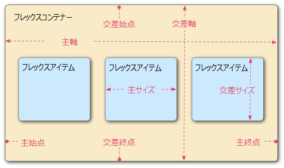

フレックスボックス（Flexbox）は、項目を行または列にレイアウトするための1次元のレイアウト方法です。 項目は追加のスペースを埋めるためにたわみ、小さいスペースに収まるように縮小します。 この記事では、すべての基本事項について説明します。
| 前提知識: | HTML の基本（HTML 入門を学ぶ）、および CSS の機能の考え方（CSS 入門を学ぶ）。 |
|---|---|
| 学習目標: | フレックスボックス・レイアウトシステムを使用してウェブのレイアウトを作成する方法を習得する。 |
長い間、CSS レイアウトを作成するために利用可能な唯一の信頼できるクロスブラウザー互換ツールはフロートと位置指定のようなものでした。 これらは問題なく機能しますが、いくつかの点ではかなり限定的でイライラするものです。
次のような単純なレイアウト要件は、このようなツールを使用しても、便利で柔軟な方法で実現するのが困難または不可能です。
以降のセクションで見るように、フレックスボックスは多くのレイアウト作業をずっと簡単にします。 さあ始めましょう！
この記事では、フレックスボックスがどのように機能するのかを理解するのに役立つ一連の演習を進めていくようにします。 まず始めに、github リポジトリから最初のスターターファイル flexbox0.html のローカルコピーを作成し、最新のブラウザー（Firefox や Chrome など）にロードして、コードエディタでコードを確認してください。 ここでもライブを見ることができます。
内部に最上位の見出しを持つ {{htmlelement("header")}} 要素と、3つの {{htmlelement("article")}} を含む {{htmlelement("section")}} 要素があります。 これらを使用して、かなり標準的な3列のレイアウトを作成します。
まず最初に、どの要素を柔軟な箱（flexible box）としてレイアウトするかを選択する必要があります。 これを行うために、あなたが影響を与えたい要素の親要素に {{cssxref("display")}} の特別な値を設定します。 この場合、{{htmlelement("article")}} 要素をレイアウトしたいので、これを {{htmlelement("section")}} に設定します（これがフレックスコンテナになります）。
section {
display: flex;
}
この結果は次のようになります。

それで、このたった一つの宣言が必要なものすべてを与えてくれます — 信じられないでしょ？ 同じ幅の列を持つ複数列のレイアウトがあり、列の高さはすべて同じです。 これは、フレックス項目（フレックスコンテナの子）に与えられるデフォルト値が、このような一般的な問題を解決するために設定されているためです。 それらについての詳細は後で。
注: インライン項目を柔軟な箱としてレイアウトしたい場合は、inline-flex を {{cssxref("display")}} の値として設定することもできます。
要素が柔軟な箱として配置されるとき、それらは次のように2つの軸に沿って配置されます。

display: flex が設定されている親要素（この例では {{htmlelement("section")}}）は、フレックスコンテナ（flex container）と呼ばれます。次のセクションを進むときには、この用語集のことを覚えておいてください。 使用されている用語のいずれかについて混乱した場合は、いつでもここを参照することができます。
フレックスボックスは {{cssxref("flex-direction")}} というプロパティを提供します。 これは主軸が走る方向（フレックスボックスの子がどの方向にレイアウトされるか）を指定します — デフォルトではこれは row に設定されていて、ブラウザーのデフォルト言語が動作する方向（英語のブラウザーの場合は左から右に）にそれらが横一列にレイアウトされます。
次の宣言を {{htmlelement("section")}}）の規則に追加してみてください。
flex-direction: column;
これにより、CSS を追加する前と同じように、項目が縦一列のレイアウトに戻されます。 先に進む前に、この宣言を例から削除してください。
注: row-reverse と column-reverse の値を使用して、フレックス項目を逆方向にレイアウトすることもできます。 これらの値も試してみてください！
レイアウトの幅や高さが決まっているときに発生する問題の1つは、最終的にはフレックスボックスの子がコンテナをオーバーフローさせてレイアウトが壊れることです。 flexbox-wrap0.html の例を見て、それをライブで見てみてください（この例に沿って進めたい場合は、このファイルのローカルコピーを取ってください）。

ここで実際に子がコンテナから抜け出しているのを見ます。 これを修正できる1つの方法は、{{htmlelement("section")}}）の規則に次の宣言を追加することです。
flex-wrap: wrap;
また、{{htmlelement("article")}} の規則に次の宣言を追加します。
flex: 200px;
試してみてください。 これが含まれていると次のようにレイアウトがはるかに良く見えることがわかります。
 現在、複数の行があります — 多くのフレックスボックスの子が各行に納められているので、オーバーフローは次のラインに移動します。
現在、複数の行があります — 多くのフレックスボックスの子が各行に納められているので、オーバーフローは次のラインに移動します。 article に設定した flex: 200px の宣言は、それぞれが少なくとも 200px 幅になることを意味します。 このプロパティについては後で詳しく説明します。 また、最後の行の最後の数個の子がそれぞれ幅広になっているので、依然として行全体がいっぱいになっていることに気付くかもしれません。
しかし、ここでできることは他にもあります。 まず最初に、{{cssxref("flex-direction")}} プロパティの値を row-reverse に変更してみてください。 これで、まだ複数行のレイアウトがあることがわかりますが、ブラウザーウィンドウの反対側の隅から開始して逆方向に流れます。
この時点で、{{cssxref("flex-flow")}} という {{cssxref("flex-direction")}} と {{cssxref("flex-wrap")}} の一括指定が存在することに注目する価値があります。 例えば、次のように置き換えることができます。
flex-direction: row; flex-wrap: wrap;
を
flex-flow: row wrap;
それでは、最初の例に戻って、フレックス項目の占めるスペースの割合を制御する方法を見てみましょう。 ローカルコピーの flexbox0.html を起動するか、新しい出発点として flexbox1.html のコピーを入手してください（ライブで見る）。
まず、CSS の一番下に次の規則を追加します。
article {
flex: 1;
}
これは、各フレックス項目が主軸に沿って使用可能なスペースのうちどれだけを占めるかを決定する、無単位の割合値です。 この場合、各 {{htmlelement("article")}} 要素に 1 の値を与えています。 つまり、パディングやマージンなどを設定した後の残りの予備スペースのうちから、すべてが同じ量を占めます。 これは割合であり、各フレックス項目に 400000 の値を指定してもまったく同じ効果があることを意味します。
それでは、前の規則の下に次の規則を追加します。
article:nth-of-type(3) {
flex: 2;
}
リフレッシュすると、3番目の {{htmlelement("article")}} が他の2つの幅の2倍の幅を占めます。 合計で 4 割合単位が使用可能です。 最初の2つのフレックス項目はそれぞれ 1 単位ずつ持つため、それぞれ使用可能なスペースの 1/4 を占めます。 3つ目は 2 単位を持っているので、それは使用可能なスペースの 2/4（または 1/2）を占めます。
flex の値内に最小サイズ値を指定することもできます。 既存の article の規則を次のように更新してみてください。
article {
flex: 1 200px;
}
article:nth-of-type(3) {
flex: 2 200px;
}
これは基本的に「各フレックス項目には最初に 200px の使用可能なスペースが与えられます。 その後、残りの使用可能なスペースは割合単位に従って共有されます。」と述べています。 リフレッシュしてみると、スペースの共有方法に違いが見られます。
フレックスボックスの真の価値は、その柔軟性/応答性に見ることができます — ブラウザーウィンドウのサイズを変更したり、別の {{htmlelement("article")}} 要素を追加したりしても、レイアウトは問題なく機能します。
{{cssxref("flex")}} は、最大3つの異なる値を指定できる{{cssxref("Shorthand_properties","一括指定プロパティ")}}です。
本当に必要な場合以外は、個別指定の flex プロパティを使用しないことをお勧めします（例えば、以前に設定したものを上書きする場合など）。 それらは多くの余分なコードが書かれることにつながり、多少混乱するかもしれません。
フレックスボックスの機能を使用して、主軸または交差軸に沿ってフレックス項目を整列させることもできます。 新しい例である flex-align0.html を見て（ライブも見る）、これを調べてみましょう。 これは、きちんとした柔軟なボタン/ツールバーに変わります。 現時点では、いくつかのボタンが左上隅に詰まった水平のメニューバーが表示されます。

まず、この例のローカルコピーを取ります。
それでは、例の CSS の最後に次のものを追加してください。
div {
display: flex;
align-items: center;
justify-content: space-around;
}
ページをリフレッシュすると、ボタンが横方向と縦方向に中央揃えになっていることがわかります。 これを2つの新しいプロパティを介して行いました。
{{cssxref("align-items")}} は、フレックス項目が交差軸上のどこに配置されるかを制御します。
stretch です。 これは、すべてのフレックス項目を交差軸の方向に親を埋めるように引き伸ばします。 親が交差軸方向に固定幅を持っていない場合、すべてのフレックス項目は最長のフレックス項目と同じ長さになります。 これが最初の例がデフォルトで同じ高さの列を得た方法です。center の値により、項目は固有の寸法を維持しますが、交差軸の中心に配置されます。 これが、この例のボタンが縦方向に中央揃えされている理由です。flex-start や flex-end のような値を持つこともできます。 これは、すべての項目をそれぞれ交差軸の始点や終点に揃えます。 詳細については {{cssxref("align-items")}} を参照してください。{{cssxref("align-self")}} プロパティを適用することで、個々のフレックス項目の {{cssxref("align-items")}} のふるまいを上書きできます。 例えば、CSS に次のコードを追加してみてください。
button:first-child {
align-self: flex-end;
}
これがどのような影響を与えるのかを見て、終了したらもう一度削除します。
{{cssxref("justify-content")}} は、フレックス項目が主軸上のどこに配置されるかを制御します。
flex-start です。 これにより、すべての項目が主軸の始点に配置されます。flex-end を使うことができます。center は justify-content のための値でもあり、フレックス項目を主軸の中心に配置します。space-around は便利です。 両端に少しのスペースを残して、すべての項目を主軸に沿って均等に配置します。space-between があります。 これは、両端にスペースを残さないという点を除けば、space-around に非常に似ています。続ける前に、これらの値を使用してそれらがどのように機能するかを確認することをお勧めします。
フレックスボックスには、ソース順に影響を与えずにフレックス項目のレイアウトの順序を変更する機能もあります。 これも従来のレイアウト方法では不可能なことです。
このコードは簡単です。 ボタンバーのサンプルコードに次の CSS を追加してみてください。
button:first-child {
order: 1;
}
リフレッシュすると、[Smile] ボタンが主軸の終点に移動したことがわかります。 これがどのように機能するかについてもう少し詳しく説明しましょう。
order の値が設定されているフレックス項目は、小さな order の値を持つ項目よりも表示順序の後半に表示されます。order の値を持つフレックス項目は、ソース順で表示されます。 そのため、2、1、1、0 の order の値がそれぞれ設定された4つの項目がある場合、それらの表示順序は 4、2、3、1 となります。order の値を持ち、ソース順でそれより後にあるためです。負の order の値を設定して、0 が設定されている項目よりも早く項目を表示することができます。 例えば、次の規則を使用して、[Blush] ボタンを主軸の始点に表示させることができます。
button:last-child {
order: -1;
}
フレックスボックスを使ってかなり複雑なレイアウトを作成することは可能です。 フレックス項目をフレックスコンテナとしても設定して、その子も柔軟な箱のようにレイアウトできるようにしてもまったく問題ありません。 complex-flexbox.html を見てください（ライブも見る）。

このための HTML はかなり単純です。 3つの {{htmlelement("article")}} を含む {{htmlelement("section")}} 要素があります。 3番目の {{htmlelement("article")}} には3つの {{htmlelement("div")}} が含まれています。
section - article
article
article - div - button
div button
div button
button
button
レイアウトに使用したコードを見てみましょう。
まず、{{htmlelement("section")}} の子を柔軟な箱として配置するように設定します。
section {
display: flex;
}
次に、{{htmlelement("article")}} 自体にいくつかの flex の値を設定します。 ここで2番目の規則に特に注意してください — 3番目の {{htmlelement("article")}} は、その子もフレックス項目のようにレイアウトするように設定していますが、今回はそれらを column のようにレイアウトしています。
article {
flex: 1 200px;
}
article:nth-of-type(3) {
flex: 3 200px;
display: flex;
flex-flow: column;
}
次に、最初の {{htmlelement("div")}} を選択します。 最初に flex: 1 100px; を使用して効果的にそれの最小の高さを 100px にしてから、その子（{{htmlelement("button")}} 要素）もフレックス項目のように配置されるように設定します。 ここでそれらをラッピングする行にレイアウトし、先ほど見た個々のボタンの例で行ったように、それらを使用可能なスペースの中央に配置します。
article:nth-of-type(3) div:first-child {
flex: 1 100px;
display: flex;
flex-flow: row wrap;
align-items: center;
justify-content: space-around;
}
最後に、ボタンのサイズを設定しましたが、もっとおもしろいことに、1 auto の flex の値を設定しています。 これは非常に興味深い効果があり、ブラウザーウィンドウの幅を変更してみるとわかります。 ボタンは可能な限り多くのスペースを占有し、できるだけ同じラインに配置できますが、同じラインに収まりきらなくなった場合は、ドロップダウンして新しいラインを作成します。
button {
flex: 1 auto;
margin: 5px;
font-size: 18px;
line-height: 1.5;
}
フレックスボックスのサポートは、Firefox、Chrome、Opera、Microsoft Edge、IE 11、Android / iOS の新しいバージョンなど、ほとんどの新しいブラウザーで利用できます。 ただし、フレックスボックスをサポートしていない古いブラウザーもまだあります（または、しますが、本当に古い、時代遅れのバージョンをサポートします）。
あなたがただ学んで実験している間、これはあまり重要ではありません。 ただし、実際のウェブサイトでフレックスボックスを使用することを検討している場合は、テストを行い、できるだけ多くのブラウザーでユーザーエクスペリエンスが許容範囲内であることを確認する必要があります。
フレックスボックスはいくつかの CSS 機能よりも少しトリッキーです。 例えば、ブラウザーに CSS ドロップシャドウがない場合でも、そのサイトは引き続き使用可能です。 ただし、フレックスボックス機能をサポートしていないと、レイアウトが完全に壊れて使用できなくなる可能性があります。
クロスブラウザーテストのモジュールでは、クロスブラウザーのサポートの問題を解決するための戦略について説明します。
この記事では多くをカバーしましたが、最も大事な情報を覚えていますか？次に移動する前に、この情報を保持しているか検証するテストがあります — Test your skills: Flexbox を見てください。
これで、フレックスボックスの基本についてのツアーは終了です。 私たちはあなたが楽しみを持って、学習と共に前進するにつれてそれと一緒に良い遊びがあることを願っています。 次に、CSS レイアウトのもう1つの重要な側面、CSS グリッドについて見ていきます。